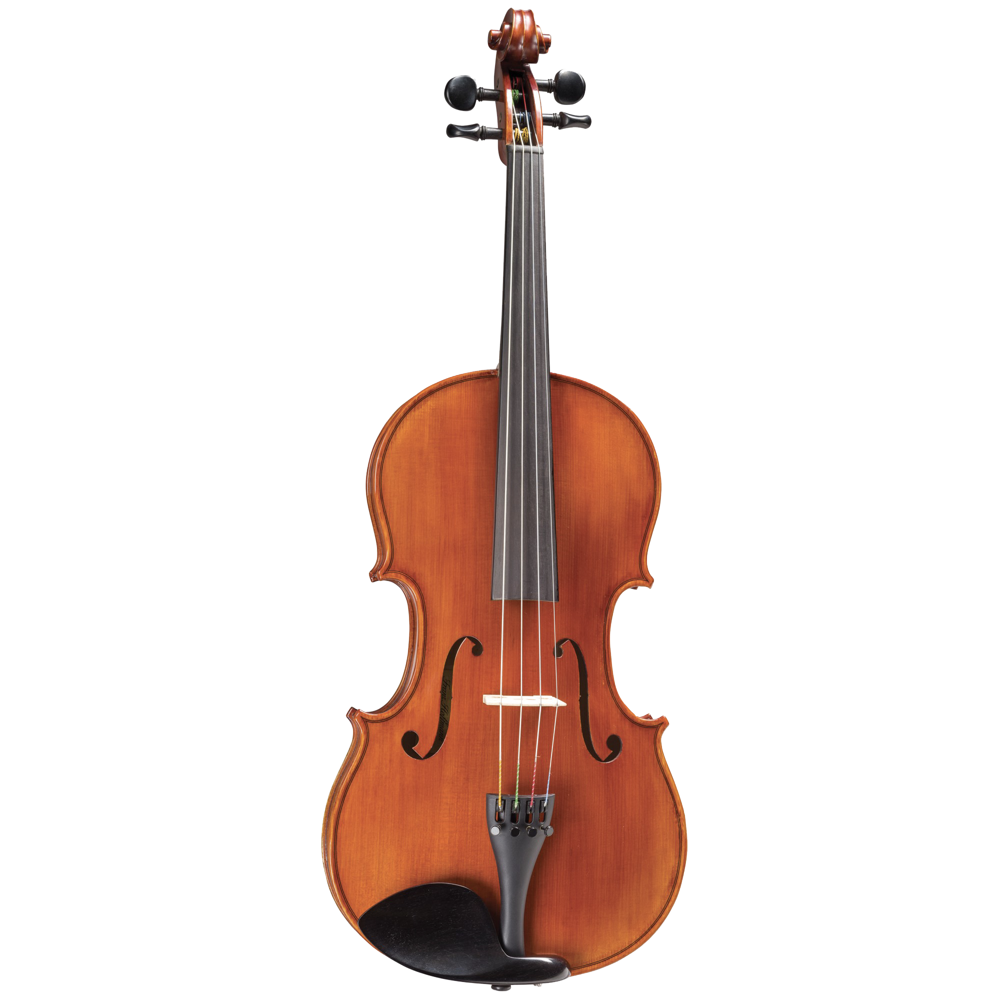
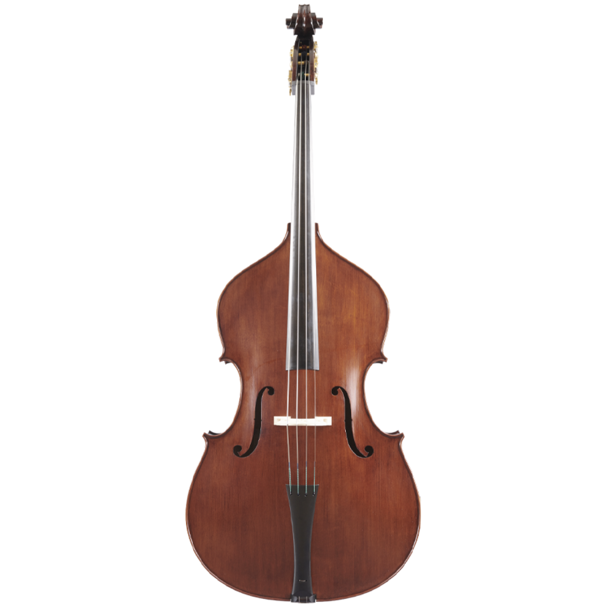

Take a look at the variety of instruments in the Cinco Ranch Junior High Orchestra!
The violin is a small, wooden instrument. and it’s the highest-pitched instrument in the string family. Sounds on violins can be produced by either plucking the strings with your finger or by using a wooden object called a bow. Violinists place their instrument on their neck with a small object called the shoulder rest to make it comfortable for them to play and hold it in place.
The viola is a medium-sized instrument that is slightly bigger than the violin, and it has a deeper tone that is lower than the violin but higher than the cello. Violas can also be either plucked or bowed to produce sounds. The viola is usually also used with a shoulder rest, and it is the second highest-pitched instrument in the string family.
The cello is the third highest-pitched instrument in the string family, and sounds on a cello can also be produced by plucking or bowing. It has a deeper tone than the viola, but they both have similar strings. Cellos are much larger than violins and violas, so instead of carrying it to school back and forth, CRJH allows you to rent a cello to keep at school.
The bass is the lowest-sounding instrument with the deepest strings in the string family. It has a rich sound with a heavy tone, and basses can also be plucked or bowed to produce a sounds. The bass is larger and heavier than the cello, but don’t worry, CRJH also allows you to rent a bass to keep at school.
